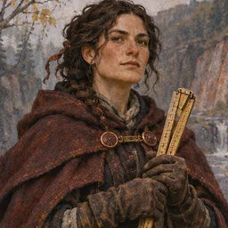
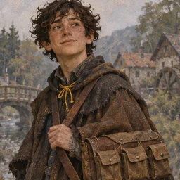
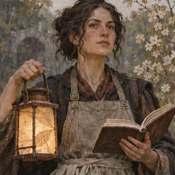
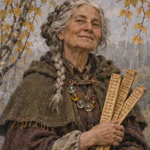
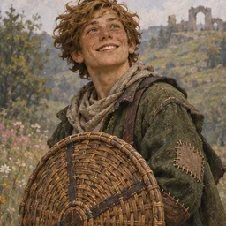
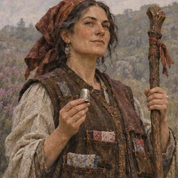
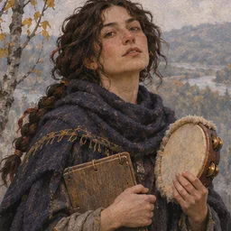

Милена Мостовая
воин 3 · ОЗ 31 · КД 11 · Скорость 30 фтДорожная мастерица, привыкшая делать опасное место доступным
Плащ с медными застёжками, крепкие рукавицы и складная мерная рейка.
Вы пришли на площадь согласовать ремонт настила и заметили, что привычные знаки перестали узнавать.
Открыть фигурку для поля
Оружие и заклинания
Оружие · Длинный меч, Ручной топор

Илар Нитник
плут 3 · ОЗ 24 · КД 13 · Скорость 30 фтПосыльный, замечающий, кого не позвали к общему столу
Жёлтая нить на воротнике, мягкие сапоги, сумка с отдельными карманами для чужих писем.
Вы пришли вернуть недоставленное письмо: адрес читается, но знакомое обращение доносится из пустого переулка. Содержание письма принадлежит адресату.
Открыть фигурку для поля
Оружие и заклинания
Оружие · Рапира, Короткий лук

Рина Свечная
жрец 3 · ОЗ 24 · КД 11 · Скорость 30 фтХранительница соседских обещаний и простых обрядов
Серый передник поверх дорожной одежды, фонарь с бумажной заслонкой и открытая тетрадь.
Вы помогаете на площади людям записывать обещания понятными словами и хотите выяснить, почему некоторые имена теперь вызывают молчание.
Открыть фигурку для поля
Оружие и заклинания
Оружие · Боевой посох
Заклинания · Лечащее слово, Обнаружение магии

Мирта Дождевая
волшебник 3 · ОЗ 20 · КД 12 · Скорость 30 фтБывшая учительница, изучающая колебания меди
Короткий шерстяной плащ, стеклянные бусины на шнуре и исписанные деревянные линейки.
Вы пришли на площадь с простым опытом: можно ли увидеть звон в чашке воды?
Открыть фигурку для поля
Оружие и заклинания
Оружие · Боевой посох
Заклинания · Обнаружение магии, Туманный шаг

Дан Жаворонок
воин 3 · ОЗ 31 · КД 11 · Скорость 30 фтСадовый работник, защищающий чужое право на собственный темп
Зелёная куртка с заплатой на локте, мягкий шейный платок и плетёный щит.
Вы принесли на площадь груши для общего стола; вам не нравится, когда помощь превращают в состязание стойкости.
Открыть фигурку для поля
Оружие и заклинания
Оружие · Длинный меч, Ручной топор

Зоя Катушка
плут 3 · ОЗ 24 · КД 13 · Скорость 30 фтСтранствующая портниха, знающая цену принадлежности
Длинная жилетка с карманами для лоскутов, серебряный напёрсток и дорожный посох.
Вы остановились на площади предложить обмен работой и хотите понять, как здесь встречают тех, у кого ещё нет знакомого знака.
Открыть фигурку для поля
Оружие и заклинания
Оружие · Рапира, Короткий лук

Беря Тихопев
жрец 3 · ОЗ 24 · КД 11 · Скорость 30 фтСобиратель песен и жестов, умеющий слышать разногласие
Тёмно-синий шарф, дощечка для записей и небольшой бубен с мягким краем.
Вы пришли на площадь записать местные приветствия, но готовы оставить чужую историю незаписанной, если её не хотят отдавать.
Открыть фигурку для поля
Оружие и заклинания
Оружие · Боевой посох
Заклинания · Лечащее слово, Обнаружение магии